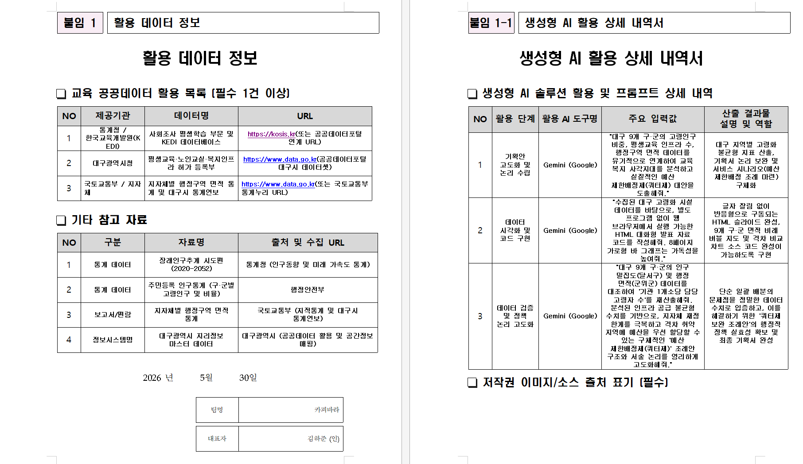

Overview
AI 공공데이터 대회
본 프로젝트는 공공데이터를 활용하여 사회적 문제를 해결하기 위해 기획된 AI 모델링 프로젝트로, 데이터 전처리부터 머신러닝 알고리즘 적용을 통한 예측 모델 구현까지 데이터 기반의 문제 해결 과정을 경험했습니다.
Python
AI
공공데이터
Reflection
배운 점과 느낀 점
대회를 진행하며 공공데이터를 가공하고 정제하는 데이터 전처리 과정의 중요성을 깊이 이해하게 되었습니다. AI 모델의 성능을 높이기 위해 다양한 알고리즘을 비교·분석하고 파라미터를 조정해보는 과정에서 데이터 기반의 문제 해결 능력을 키울 수 있었습니다.